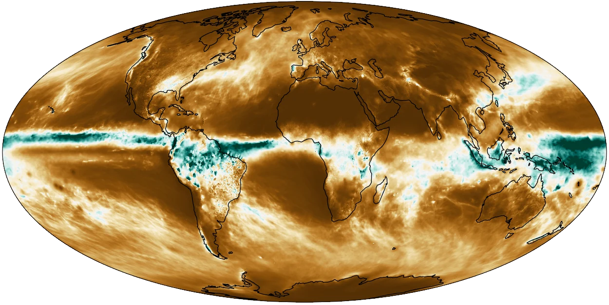

AQUA
Main developerThe model evaluation framework at the heart of the ecosystem: core engine for data access, regridding and aggregation, part of the operational ClimateDT workflow.
Open source
Tools I develop to access, evaluate and understand the output of high-resolution climate models — written in Python, used in the operational workflow of the Destination Earth Climate Digital Twin, and open to everyone.
Public activity of @mnurisso on GitHub, fetched live.
Flagship project
The Application for QUality Assessment — a model evaluation framework for the Climate Change Adaptation Digital Twin.
AQUA is a model evaluation framework designed for running diagnostics on high-resolution climate models, specifically for Climate DT climate simulations being part of Destination Earth activity. The package provides a flexible and efficient Python 3 framework to process and analyze large volumes of climate data. With its modular design, AQUA offers seamless integration of core functions and a wide range of diagnostic tools that can be run in parallel.
I am one of the main developers of AQUA, and I am responsible for the implementation of the core framework and the development of new diagnostics.
mamba install -c conda-forge aqua-corepip install aqua-core
pip install aqua-diagnosticsgit clone git@github.com:DestinE-Climate-DT/AQUA.git
cd AQUA
mamba env create -f environment.yml
mamba activate aquaAQUA requires Python 3.12 or newer. A container-based deployment is also available — see the documentation.
Companion package
The scientific tools that run on top of the AQUA core to monitor and evaluate climate simulations.
AQUA-diagnostics contains the full set of diagnostic tools developed for the Destination Earth Climate Change Adaptation Digital Twin (ClimateDT). It is designed to be used together with the AQUA core framework, which provides data access and preprocessing functionalities.
The package includes the scientific tools configured as diagnostics to run for online monitoring of climate simulations.
Diagnostics can be executed standalone via the Python API, or through the aqua analysis wrapper provided by AQUA core.
I am a main contributor of AQUA-diagnostics.
pip install aqua-diagnosticsRequires a working AQUA core installation. See the repository for the full setup, including catalogs and auxiliary files.

How the pieces fit
Model output is described by catalogs, read and processed by the core framework, and analysed by a set of diagnostics.
ICON, IFS-NEMO and IFS-FESOM simulations of the ClimateDT.
Describes where and how the ClimateDT data live, so AQUA can find and read them.
Data access, regridding, averaging and aggregation on large datasets.
State-of-the-art diagnostics on low-resolution data and frontier diagnostics on high-resolution data.
Repositories
Commit counts, stars and versions below are fetched live from GitHub and PyPI.
The model evaluation framework at the heart of the ecosystem: core engine for data access, regridding and aggregation, part of the operational ClimateDT workflow.
The full set of diagnostic tools for online monitoring and evaluation of ClimateDT climate simulations, built on top of the AQUA core.
AQUA catalog for Climate DT: describes the ClimateDT simulations so that AQUA can find and read them.
A compact regridder using sparse matrix multiplication, used by AQUA for regridding.
EC-Earth basic evaluation tool: a lightweight evaluation tool for global climate models.
A repository with useful notes about coding in C++, python and notes on utilities like git, conda, cluster usage etc.
Ph.D. and Master work on the PLUTO MHD code: a current sheet detection algorithm with post-reconnection particle energy distributions, and a module for anisotropic cosmic-ray diffusion.
No projects match this filter.
Tools of the trade
Want to get involved? AQUA welcomes new contributors — see the Guidelines for Contributors, or get in touch.